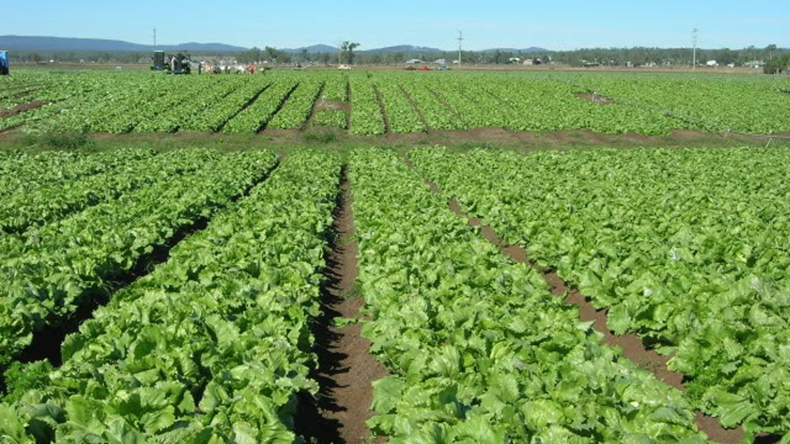

Notre Mission est Simple
Fournir de la nourriture de qualité à la population de facon à contribuer à son bien-être.
Nous sommes conscient que c'est un defis à relever du moment ou la production de mass est difficile à faire compte tenu de notre objectif.
Mais nous somme les seules responsable de notre santé, et de notre bien-être. Tout est parti du constat de l'abondance des terres et de la hausse des prix des denrées alimentaires.
Nous ne trouvons pas d'excusespour justifier cela.
La seule solution que nous avons trouvé, c'est de nous mettre au travail.
